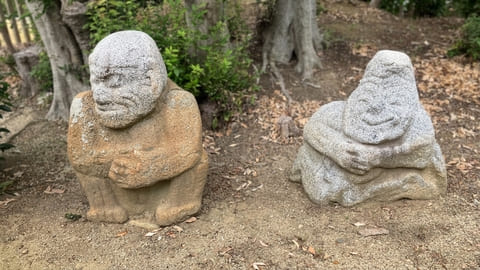
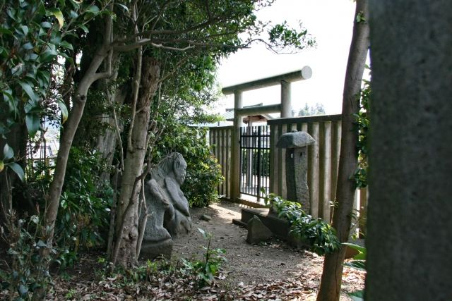

個性的な石造物
猿のようにも人のようにも見える独特な姿が特徴で、飛鳥らしい謎めいた魅力があります。

猿石は、明日香村平田にある江戸時代に発見された石造物です。 人や動物のような独特な表情が刻まれており、飛鳥を代表する謎の石造物のひとつとして知られています。 現在は吉備姫王墓の敷地内に4体が安置され、飛鳥の歴史散策で人気のスポットになっています。
| 見学時間 | 自由見学 |
|---|---|
| 定休日 | なし |
| 料金 | 無料 |
| 所要時間 | 約10分 |
| 駐車場 | 野口駐車場 （徒歩約10分・有料） |
| アクセス |
近鉄飛鳥駅から徒歩約10分。 高松塚古墳やキトラ古墳周辺と合わせて散策できます。 |
| 地図 | 地図はこちら |

猿のようにも人のようにも見える独特な姿が特徴で、飛鳥らしい謎めいた魅力があります。

制作された時代や目的には諸説があり、古代飛鳥の文化を想像させる貴重な石造物です。
猿石は、明日香村平田にある吉備姫王墓の敷地内に置かれている4体の石造物です。 江戸時代に欽明天皇陵の南側から掘り出されたと伝えられています。 人物や動物を表現したような姿をしていますが、誰が何の目的で作ったものかは明らかになっておらず、飛鳥時代の謎のひとつとして注目されています。